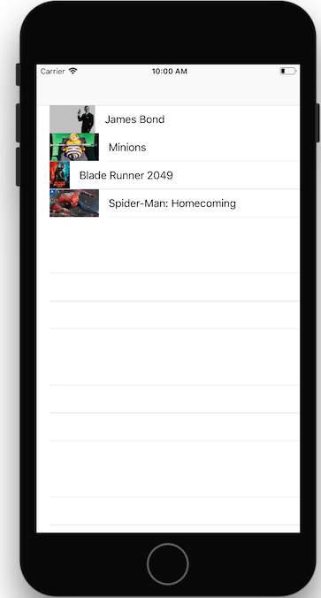

Navigation
Introduction
Dans cet atelier, nous allons créer une liste de films. En cliquant sur un film, nous allons arriver sur sa fiche détaillée.
Cela nous permettra de travailler sur les transitions entre les écrans.
Notions nécessaires : Différents conteneurs de navigation, transitions et type d'affichage, navigationController, delegate et data source, segue, cellules statiques et cellules dynamiques
Reprenez le projet Xcode de l'atelier 2, où vous aviez récupéré une liste de films depuis un fichier .json, ou clonez ce repository qui contient la solution de l'atelier 2 : https://github.com/Formation-iOS/Atelier2_ParsingCodable
Exercice 1- UITableView statique
- Créez un UITableViewController avec 4 cellules de film statiques de type Basic. Laissez le layout tel quel.
- Créez un écran basique avec un fond rouge par exemple
- Au clic sur la cellule, ouvrez cet écran rouge en modal (
showdans le storyboard) - Créez une classe
DetailViewController - Connectez l'écran rouge avec la classe
DetailViewController(Custom class :DetailViewControllerdans le storyboard) - Ajoutez un bouton fermer à la vue rouge, et créez une IBAction
closeButtonClicked:dans le code deDetailViewController - Dans le code de
closeButtonClicked:, cachez la vue modale (dismiss)

Exercice 2- Navigation Controller
Nous allons créer une navigation classique à base de 'Push'
- Intégrez votre liste de film dans un
UINavigationController - Au clic sur la cellule, l'écran est maintenant affiché en mode push
Exercice 3 - Données dynamiques
Nous allons maintenant afficher les données que l'on a parsé dans l'atelier précédent.
- Dans le storyboard, déclarez votre tableView dynamique et ajoutez une cellule avec un label pour le titre et un label pour la note.
- Créez une classe MovieCell qui dérive de
UITableViewCell. - Dans le storyboard, déclarez que la cell est de type
MovieCellet que son identifier estMovieCellIdentifier. - Créez les outlets entre le storyboard et
MovieCellpour les labels. - Implémentez la fonction
tableView:numberOfRowsInSection:. Elle doit renvoyer le nombre d'éléments dans le tableau de film. - Implémentez
tableView:cellForRowAt:qui doit renvoyer une cellule pour chacun des films. Pour cela, utiliseztableView.dequeueReusableCell(identifier:"")pour récupérer une cellule avec le bon identifiant. Et castez cette cellule enMovieCell. Puis remplissez les label de titre et de rating avec les données du film correspondant à la ligne.
Exercice 4 - Ouverture d'un écran de détail spécifique
- Implémentez le protocole UITableViewDelegate, notamment la fonction
tableView:didSelectRowAtIndexPath:pour réagir au click. - Dans cette fonction, il faut :
- créer un écran de type DetailViewController (
storyboard.instanciateViewController(identifier:"")) - lui donner le bon movie (
detailViewController.movie =) - le pusher dans le navigationController (
self.navigationController.push(viewController)).
- créer un écran de type DetailViewController (
Exercice bonus : ajoutez une image dans la liste
- Ajoutez une variable
imagePathà la classe Movie en y mettant le poster_path du json - Créez une fonction posterImage qui renvoie une image crée à partir d'
imagePath: utilisation deUIImage(named:)etdropFirst()pour ne pas garder le premier caractère de poster_path - Ajoutez une image dans les cellules de type MovieCell
- Remplissez l'image avec les bonnes données dans MovieCell et DetailViewController
Note : vous pouvez récuperer des images dans ce fichier .zip : MovieImage.zip
Exercice bonus 2 : ajoutez deux type de cellule
- Pour les mauvais films (rating < 7.2), n'affichez pas l'image et affichez le titre en petit en gris avec la note en gras sur la droite
- Pour les bons films, mettez une hauteur de cellule à 150 px, et pour les mauvais films, une hauteur de 40 px. Voir la fonction
tableView:heightForRowAtIndexPath